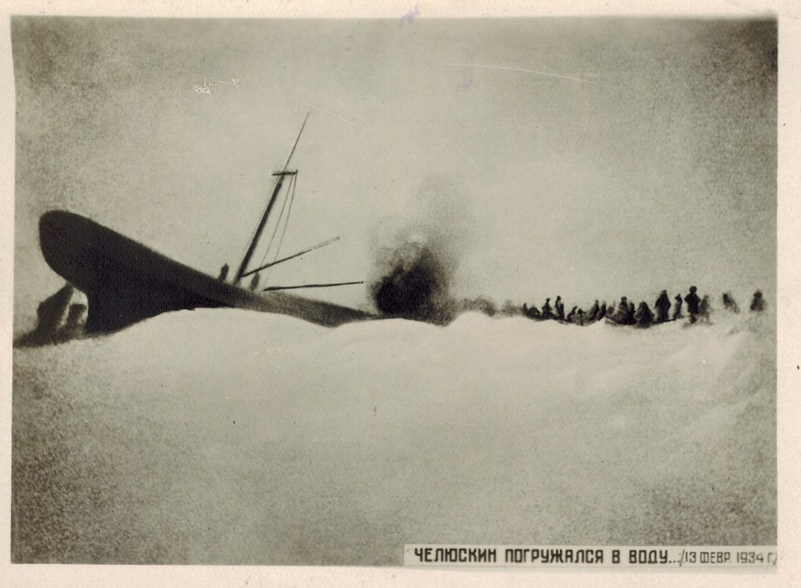
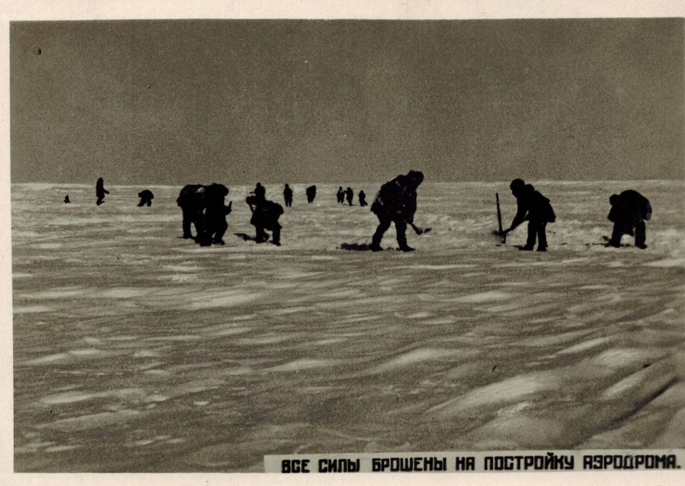
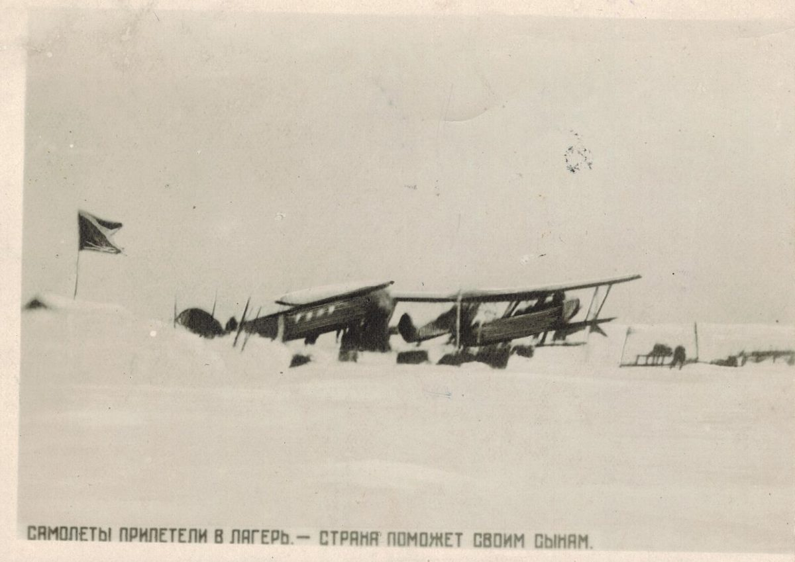

Чукотское море · 13 февраля 1934«Челюскин» уходит под лёд. Люди уже на льдине.
Чукотское море · 13 февраля — 13 апреля 1934
Экспедиция Отто Шмидта и экипаж парохода «Челюскин» · и лётчики, которые их вывезли
Челюскинцы
Лёд раздавил корабль — и 104 человека со льдины вынесли лётчики, всех до одного
◆ Два часа
13 февраля 1934 года льды раздавили пароход «Челюскин». За два часа он ушёл под воду.
◆ Льдина
На лёд сошли 104 человека — среди них десять женщин и двое маленьких детей. До берега — сотни километров.
◆ Небо
Два месяца они строили аэродромы на льду. Лётчики вывезли всех до одного.